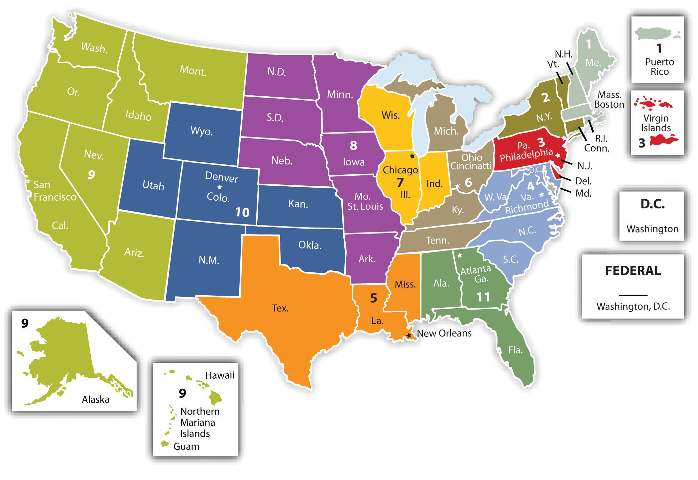

Although it is sometimes said that there are two separate court systems, the reality is more complex. There are, in fact, fifty-two court systems: those of the fifty states, the local court system in the District of Columbia, and the federal court system. At the same time, these are not entirely separate; they all have several points of contact.
State and local courts must honor both federal law and the laws of the other states. First, state courts must honor federal law where state laws are in conflict with federal laws (under the supremacy clause of the Constitution; see Chapter 4 "Constitutional Law and US Commerce"). Second, claims arising under federal statutes can often be tried in the state courts, where the Constitution or Congress has not explicitly required that only federal courts can hear that kind of claim. Third, under the full faith and credit clause, each state court is obligated to respect the final judgments of courts in other states. Thus a contract dispute resolved by an Arkansas court cannot be relitigated in North Dakota when the plaintiff wants to collect on the Arkansas judgment in North Dakota. Fourth, state courts often must consider the laws of other states in deciding cases involving issues where two states have an interest, such as when drivers from two different states collide in a third state. Under these circumstances, state judges will consult their own state’s case decisions involving conflicts of laws and sometimes decide that they must apply another state’s laws to decide the case (see Table 3.1 "Sample Conflict-of-Law Principles").
As state courts are concerned with federal law, so federal courts are often concerned with state law and with what happens in state courts. Federal courts will consider state-law-based claims when a case involves claims using both state and federal law. Claims based on federal laws will permit the federal court to take jurisdiction over the whole case, including any state issues raised. In those cases, the federal court is said to exercise “pendent jurisdiction” over the state claims. Also, the Supreme Court will occasionally take appeals from a state supreme court where state law raises an important issue of federal law to be decided. For example, a convict on death row may claim that the state’s chosen method of execution using the injection of drugs is unusually painful and involves “cruel and unusual punishment,” raising an Eighth Amendment issue.
There is also a broad category of cases heard in federal courts that concern only state legal issues—namely, cases that arise between citizens of different states. The federal courts are permitted to hear these cases under their so-called diversity of citizenship jurisdictionSubject matter jurisdiction in federal court where the plaintiff is a citizen of one state, no defendant is also a citizen of that state, and the amount in controversy exceeds $75,000. (or diversity jurisdiction). A citizen of New Jersey may sue a citizen of New York over a contract dispute in federal court, but if both were citizens of New Jersey, the plaintiff would be limited to the state courts. The Constitution established diversity jurisdiction because it was feared that local courts would be hostile toward people from other states and that they would need separate courts. In 2009, nearly a third of all lawsuits filed in federal court were based on diversity of citizenship. In these cases, the federal courts were applying state law, rather than taking federal question jurisdictionFederal court subject matter jurisdiction based on a complaint that uses a federal statutory, regulatory, or constitutional law as a cause of action., where federal law provided the basis for the lawsuit or where the United States was a party (as plaintiff or defendant).
Why are there so many diversity cases in federal courts? Defense lawyers believe that there is sometimes a “home-court advantage” for an in-state plaintiff who brings a lawsuit against a nonresident in his local state court. The defense attorney is entitled to ask for removalThe right of a defendant to remove a case from state to federal court. to a federal court where there is diversity. This fits with the original reason for diversity jurisdiction in the Constitution—the concern that judges in one state court would favor the in-state plaintiff rather than a nonresident defendant. Another reason there are so many diversity cases is that plaintiffs’ attorneys know that removal is common and that it will move the case along faster by filing in federal court to begin with. Some plaintiffs’ attorneys also find advantages in pursuing a lawsuit in federal court. Federal court procedures are often more efficient than state court procedures, so that federal dockets are often less crowded. This means a case will get to trial faster, and many lawyers enjoy the higher status that comes in practicing before the federal bench. In some federal districts, judgments for plaintiffs may be higher, on average, than in the local state court. In short, not only law but also legal strategy factor into the popularity of diversity cases in federal courts.
The vast majority of civil lawsuits in the United States are filed in state courts. Two aspects of civil lawsuits are common to all state courts: trials and appeals. A court exercising a trial function has original jurisdictionThe jurisdiction that a judge has to hear witnesses and receive evidence in a trial proceeding.—that is, jurisdiction to determine the facts of the case and apply the law to them. A court that hears appeals from the trial court is said to have appellate jurisdictionthe jurisdiction of an appellate court to review whether the parties received a fair trial in accordance with applicable law. Appellate jurisdiction does not include hearing witnesses or receiving new evidence.—it must accept the facts as determined by the trial court and limit its review to the lower court’s theory of the applicable law.
In most large urban states and many smaller states, there are four and sometimes five levels of courts. The lowest level is that of the limited jurisdiction courts. These are usually county or municipal courts with original jurisdiction to hear minor criminal cases (petty assaults, traffic offenses, and breach of peace, among others) and civil cases involving monetary amounts up to a fixed ceiling (no more than $10,000 in most states and far less in many states). Most disputes that wind up in court are handled in the 18,000-plus limited jurisdiction courts, which are estimated to hear more than 80 percent of all cases.
One familiar limited jurisdiction court is the small claims court, with jurisdiction to hear civil cases involving claims for amounts ranging between $1,000 and $5,000 in about half the states and for considerably less in the other states ($500 to $1,000). The advantage of the small claims court is that its procedures are informal, it is often located in a neighborhood outside the business district, it is usually open after business hours, and it is speedy. Lawyers are not necessary to present the case and in some states are not allowed to appear in court.
All other civil and criminal cases are heard in the general trial courts, or courts of general jurisdiction. These go by a variety of names: superior, circuit, district, or common pleas court (New York calls its general trial court the supreme court). These are the courts in which people seek redress for incidents such as automobile accidents and injuries, or breaches of contract. These state courts also prosecute those accused of murder, rape, robbery, and other serious crimes. The fact finder in these general jurisdiction courts is not a judge, as in the lower courts, but a jury of citizens.
Although courts of general jurisdiction can hear all types of cases, in most states more than half involve family matters (divorce, child custody disputes, and the like). A third were commercial cases, and slightly over 10 percent were devoted to car accident cases and other torts (as discussed in Chapter 7 "Introduction to Tort Law").
Most states have specialized courts that hear only a certain type of case, such as landlord-tenant disputes or probate of wills. Decisions by judges in specialized courts are usually final, although any party dissatisfied with the outcome may be able to get a new trial in a court of general jurisdiction. Because there has been one trial already, this is known as a trial de novo. It is not an appeal, since the case essentially starts over.
The losing party in a general jurisdiction court can almost always appeal to either one or two higher courts. These intermediate appellate courts—usually called courts of appeal—have been established in forty states. They do not retry the evidence, but rather determine whether the trial was conducted in a procedurally correct manner and whether the appropriate law was applied. For example, the appellant (the losing party who appeals) might complain that the judge wrongly instructed the jury on the meaning of the law, or improperly allowed testimony of a particular witness, or misconstrued the law in question. The appellee (who won in the lower court) will ask that the appellant be denied—usually this means that the appellee wants the lower-court judgment affirmed. The appellate court has quite a few choices: it can affirm, modify, reverse, or reverse and remand the lower court (return the case to the lower court for retrial).
The last type of appeal within the state courts system is to the highest court, the state supreme court, which is composed of a single panel of between five and nine judges and is usually located in the state capital. (The intermediate appellate courts are usually composed of panels of three judges and are situated in various locations around the state.) In a few states, the highest court goes by a different name: in New York, it is known as the court of appeals. In certain cases, appellants to the highest court in a state have the right to have their appeals heard, but more often the supreme court selects the cases it wishes to hear. For most litigants, the ruling of the state supreme court is final. In a relatively small class of cases—those in which federal constitutional claims are made—appeal to the US Supreme Court to issue a writ of certiorariThe writ issued by a higher court that grants review of the decision of a lower court. In the United States, the Supreme Court’s writ of certiorari is highly sought by those who would have the court review a state supreme court judgment or that of a federal circuit court of appeals. Most of the cases heard by the Supreme Court are through the granting of a petitioner’s appeal to have the writ issued. remains a possibility.
The federal judicial system is uniform throughout the United States and consists of three levels. At the first level are the federal district courts, which are the trial courts in the federal system. Every state has one or more federal districts; the less populous states have one, and the more populous states (California, Texas, and New York) have four. The federal court with the heaviest commercial docket is the US District Court for the Southern District of New York (Manhattan). There are forty-four district judges and fifteen magistrates in this district. The district judges throughout the United States commonly preside over all federal trials, both criminal and civil.
Cases from the district courts can then be appealed to the circuit courts of appeal, of which there are thirteen (Figure 3.1 "The Federal Judicial Circuits"). Each circuit oversees the work of the district courts in several states. For example, the US Court of Appeals for the Second Circuit hears appeals from district courts in New York, Connecticut, and Vermont. The US Court of Appeals for the Ninth Circuit hears appeals from district courts in California, Oregon, Nevada, Montana, Washington, Idaho, Arizona, Alaska, Hawaii, and Guam. The US Court of Appeals for the District of Columbia Circuit hears appeals from the district court in Washington, DC, as well as from numerous federal administrative agencies (see Chapter 5 "Administrative Law"). The US Court of Appeals for the Federal Circuit, also located in Washington, hears appeals in patent and customs cases. Appeals are usually heard by three-judge panels, but sometimes there will be a rehearing at the court of appeals level, in which case all judges sit to hear the case “en banc.”
There are also several specialized courts in the federal judicial system. These include the US Tax Court, the Court of Customs and Patent Appeals, and the Court of Claims.
Overseeing all federal courts is the US Supreme Court, in Washington, DC. It consists of nine justices—the chief justice and eight associate justices. (This number is not constitutionally required; Congress can establish any number. It has been set at nine since after the Civil War.) The Supreme Court has selective control over most of its docket. By law, the cases it hears represent only a tiny fraction of the cases that are submitted. In 2008, the Supreme Court had numerous petitions (over 7,000, not including thousands of petitions from prisoners) but heard arguments in only 87 cases. The Supreme Court does not sit in panels. All the justices hear and consider each case together, unless a justice has a conflict of interest and must withdraw from hearing the case.
Figure 3.1 The Federal Judicial Circuits
Federal judges—including Supreme Court justices—are nominated by the president and must be confirmed by the Senate. Unlike state judges, who are usually elected and preside for a fixed term of years, federal judges sit for life unless they voluntarily retire or are impeached.
Trial courts and appellate courts have different functions. State trial courts sometimes hear cases with federal law issues, and federal courts sometimes hear cases with state law issues. Within both state and federal court systems, it is useful to know the different kinds of courts and what cases they can decide.